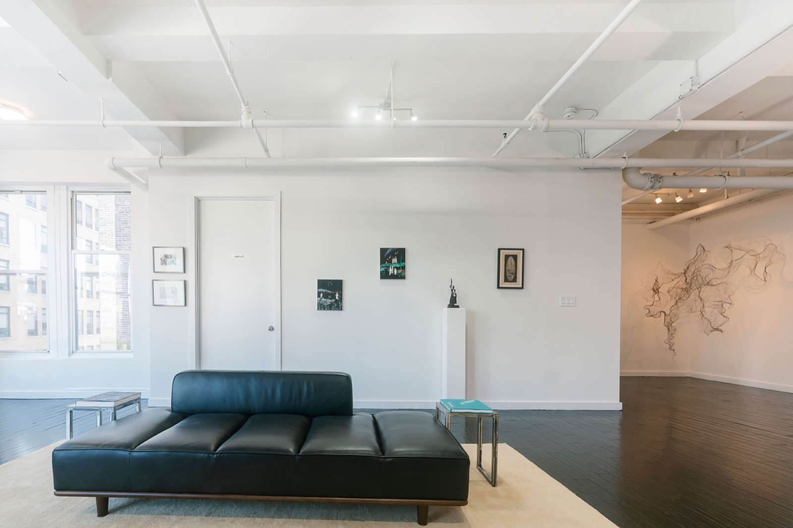
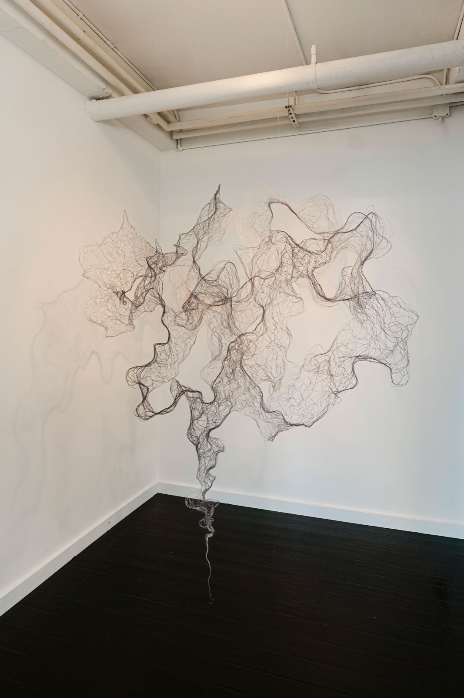
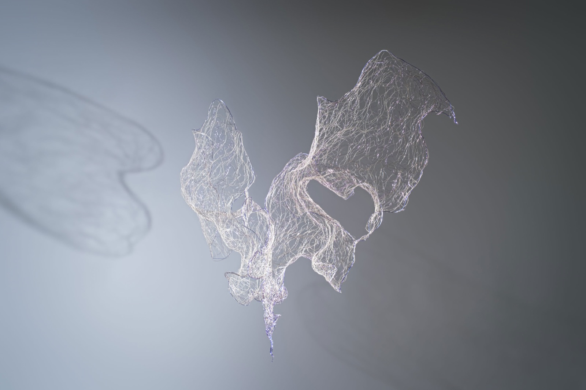
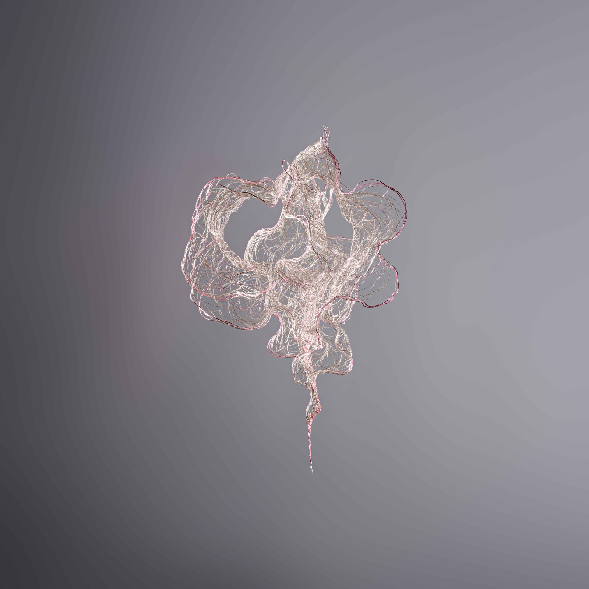

Secret Forms is an exhibition that encourages viewers to move beyond boundaries and discover a different world upon closer inspection. The scale shifts and the magnitude adjusts. What appears to be one pattern morphs into the next. These forms are familiar in feeling, but can appear foreign in fact.
Art can sometimes feel distant, inaccessible due to unspoken rules, or contain specialized language. In Secret Forms, appearances are only the beginning. Beneath each piece lies a deeper narrative waiting to be uncovered. Viewers are invited to discover the true inspiration and meaning behind the work, revealing an origin story and unexpected meaning.
The exhibition starts with Robert Cottingham, who preserves the visual language of urban American facades. Cottingham, a pioneer of photorealism, subtly distorts the plain factual truth, introducing distortions that evoke both the allure and gradual fading of an era of advertising. In Jewel, Cottingham creates a cosmology of light and shadow that interlocks against a backdrop of scaffolding and a single glowing word, transforming an abstraction that invites us to examine both the beauty and banality of commerce. Examined closely enough, it dissolves into a nostalgic combination of pattern and geometry.
Arman’s work of assemblage deepens the act of looking through deconstruction and found objects. Known for Nouveau Réalisme, he burns, smashes, and reassembles everyday objects to reveal their inner architecture through his Colères series. Each piece becomes an exercise in dissecting his prerogative “everything that is made”, vertically slicing and rewelding the object on canvas like an anatomical specimen. In Slice of Life, we encounter Joan of Arc, an iconic historical heroine. By physically removing a portion of the sculpture, Arman reduces the figure to a meaning more symbolic than human. Once part of Marcel Duchamp’s collection, this fragmented piece reflects the way folklore and history preserve only selected parts of a heroine’s story.
Julien Bismuth explores meaning through language, whether it’s cryptic computer code, an esoteric tribal dialect, or the movement of sound. Bismuth’s works symbolize the systems we build to understand the world and manage the chaos and entropy that inhabit our surroundings. Each piece holds a message that becomes meaningful once you discover how to interpret it. In one piece, binary code is replaced with small images of the piece’s name. In another, the act of writing is more meaningful than the text. And in two other pieces, an inventor’s work becomes literal.
The exhibition opens outward, with Duke Riley, through tattoo-style ink drawings, creating maritime scenes with ecological statements and fractal meaning. He captures the story of how a small town literally raised the dead to create life—and another story of how a large corporation did the inverse. On a similarly grand scale, Julia Hung fuses plastic in a novel way, turning a rigid material into a fluid biomorphic form that appears to breathe a second life. Inspired by smoke, it captures a fleeting image with no beginning and no end. Kate Hopkins, inspired by the microscopic details on butterfly wings, explores the calming, restorative effect that is found in ordered patterns across nature. Each artist reinterprets the organic world in their own profound ways, across all scales of magnitude.
Secret Forms concludes where the intimate and infinite are indistinguishable, balancing the tensions between the internal and external. Christo’s Store Fronts depict shuttered and locked doors that evoke anticipation of crossing boundaries between the public and private. This piece captures how the enclosure is more important than the content itself, and the enclosure rather than the underlying content attracts the curiosity of the viewer. Emanuel Proweller explores the secret form of emotion through the lens of melancholy and intimacy between two lovers in À l’aube ou Il faut que je rentre (“At dawn, I must go home”). aurèce vettier uses an AI model trained on his memories and dreams, to complete a pietra dura dreamscape and nonsensical bronze sculptures. Together, Christo, Proweller and vettier manipulate physical, emotional, and material boundaries.
Each piece in the exhibition is anchored to a form that appears in the natural or imagined world. What appears cryptic may be derived from reality seen through a different perspective. What appears biomorphic and natural may be otherworldly. Through both historical and emerging works, the exhibition connects the past and present, and the intimate and the infinite, challenging the boundaries between what’s known and what exists beyond our reach.
Wisps and Whispers
I imagine the night as I weave, with threads as delicate as drifting mist. Suspended in the still air, they form tiny universes cloaked in darkness, where they are both observers and observed.
Darkness softens everything it touches, while silence sharpens the subtlest details and thoughts.
Light fades into a pale brilliance, softly illuminating the flow of time.
In the shadows, all things merge and silently transform, and the rhythms of life are hidden, inaudible.
The boundaries between dream and reality, presence and absence, blur and nearly diffuse. In the depths of darkness, when time feels frozen, it seems to cradle eternity—yet these universes slip away like phantoms, vanishing as quickly as they appear.